FITcomparer – Anleitung
Vergleiche zwei bis sechs Aktivitäten von deiner Garmin-Uhr oder deinem Radcomputer direkt nebeneinander: Kennzahlen, Strecke, Verlauf und auf Wunsch als MP4-Video. Alles läuft in deinem Browser, deine Dateien werden nicht hochgeladen.
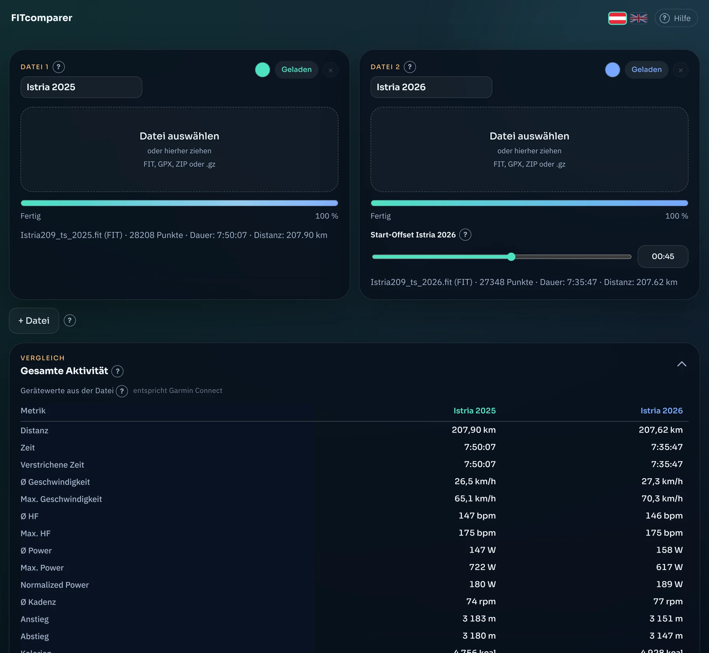
Wofür ist FITcomparer gut?
Typische Anlässe:
- dieselbe Strecke in verschiedenen Jahren: Bist du schneller, hattest du mehr oder weniger Leistung?
- ein Rennen oder eine Ausfahrt mit Freunden: Wer war wo, und wie lagen die Pulswerte?
- zwei Geräte auf einer Fahrt: Wie stark weichen sie voneinander ab?
- eine kleine Grafik fürs Teilen: dein Vergleich als Video, auch im Hochformat für Stories.
Neben vielen Bedienelementen findest du ein kleines . Fahre mit der Maus darüber, tippe es an (am Handy) oder erreiche es mit der Tab-Taste: Dann erscheint eine kurze Erklärung genau zu diesem Element.
Schnellstart in vier Schritten
- Dateien holen. Exportiere deine Aktivitäten in Garmin Connect auf der Webseite, wie im nächsten Abschnitt beschrieben. Du erhältst je ein ZIP.
- Laden. Klicke bei „Datei 1“ auf „Datei auswählen“ und wähle das ZIP (oder die .fit-Datei). Das ZIP musst du nicht entpacken.
- Zweite Datei. Dasselbe bei „Datei 2“. Weitere Aktivitäten fügst du mit „+ Datei“ hinzu (bis zu sechs).
- Vergleichen. Die Kennzahlen stehen sofort nebeneinander. Mit der Wiedergabe lässt du beide Aktivitäten gleichzeitig über die Karte laufen, im Graphen ziehst du Abschnitte auf.
Dateien aus Garmin Connect holen (Web)
Nur auf der Webseite. Der Export einzelner Aktivitäten gehört zur Weboberfläche von Garmin Connect auf connect.garmin.com, am besten an einem Computer. Die Garmin-Connect-App bietet ihn nicht an.
- Melde dich im Browser auf connect.garmin.com an und öffne die Aktivität, die du vergleichen willst.
- Klicke in der Symbolleiste unter dem Aktivitätsnamen (Herz, Stift, Stern, Gruppe) auf das Zahnrad (Markierung 1).
- Wähle im Menü „Datei exportieren“ (Markierung 2).
- Dein Browser lädt ein ZIP herunter. Der Dateiname besteht aus der Aktivitäts-Nummer, zum Beispiel
24589869683.zip. - Lade dieses ZIP in FITcomparer. Es muss nicht entpackt werden. Für jede weitere Aktivität wiederholst du die Schritte.
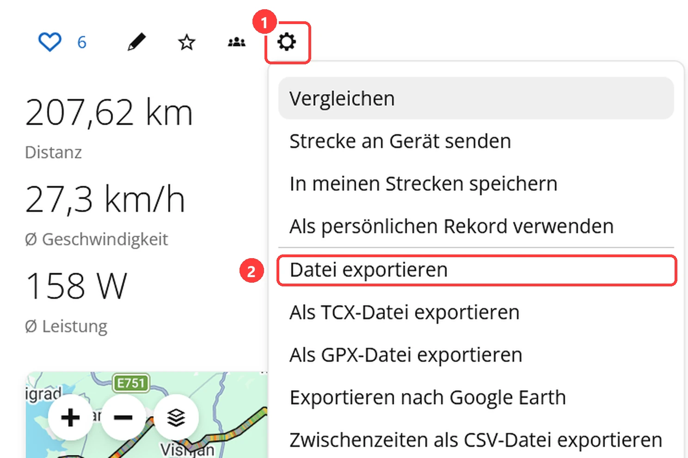
Welche Formate versteht FITcomparer?
| Format | Woher | Was passiert |
|---|---|---|
| ZIP aus „Datei exportieren“ | Zahnrad → Datei exportieren | Wird direkt geladen. Volle Auswertung: Gerätewerte und berechnete Werte. |
| FIT (ausgepackt) | aus dem ZIP | Wie das ZIP. |
| GPX | Zahnrad → Als GPX-Datei exportieren | Funktioniert, aber ohne Gerätewerte, nur berechnete Werte. Herzfrequenz, Kadenz und Leistung erscheinen nur, wenn sie in der Datei stehen. |
| TCX | Zahnrad → Als TCX-Datei exportieren | Wird nicht unterstützt. Nimm stattdessen „Datei exportieren“. |
| Komplett-Export des Kontos | Garmin-Konto → Daten exportieren | Wird nicht direkt geladen (enthält viele Aktivitäten und weitere ZIPs). Entpacke das Archiv und lade die gewünschte .fit-Datei, oder exportiere die Aktivität einzeln. |
Enthält ein ZIP mehrere Aktivitäten, bricht FITcomparer mit einer Fehlermeldung ab, statt zu raten.
Bedienung Schritt für Schritt
Dateien laden, benennen, einfärben
Jede Aktivität hat eine eigene Karte. Insgesamt kannst du bis zu sechs Karten verwenden, mindestens zwei bleiben stehen.
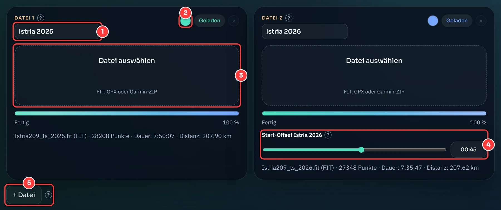
- Anzeigename. Hier kannst du die Aktivität frei umbenennen, zum Beispiel „Tobi 2025“ statt des Dateinamens. Der Name zieht sich überall durch: in die Tabellen, den Graphen, die Legende der Karte und ins exportierte Video.
- Farbe. Klicke auf den Punkt und wähle die Farbe. Sie gilt für Karte, Graph, Tabellenköpfe und Video. Die Farbe bleibt bei der Datei, auch wenn du eine andere Karte entfernst.
- Datei auswählen. FIT, GPX oder das ZIP aus Garmin Connect.
- Start-Offset. Erscheint ab der zweiten Karte, siehe unten.
- + Datei fügt eine weitere Aktivität hinzu. Mit dem × auf einer Karte entfernst du sie wieder.
Start-Offset: ungleiche Startzeiten ausgleichen
Bei Rennen, Events oder gemeinsamen Ausfahrten beginnen die Aufzeichnungen selten im selben Moment: Eine Uhr läuft früher an, eine andere später. Ohne Ausgleich liefe in der Wiedergabe eine Aktivität der anderen davon.
Mit dem Start-Offset verschiebst du eine Aktivität gegenüber Datei 1, die als Referenz gilt und unverändert bleibt. Der Wert gibt an, wie viel später (positiv) oder früher (negativ) die Datei auf der gemeinsamen Zeitachse beginnt.
Beispiel: Datei 1 startete mit dem Startschuss. Dein Radcomputer in Datei 2 wurde erst 45 Sekunden danach eingeschaltet. Stelle bei Datei 2 den Offset auf 00:45, dann laufen beide an der Startlinie gleichzeitig los. Orientiere dich an einer markanten Stelle, etwa der ersten Kreuzung oder dem ersten Anstieg, und verschiebe, bis die Marker auf der Karte beieinander bleiben.
Der Regler deckt ±10 Minuten ab. Im Textfeld daneben kannst du genauer und auch weiter weg einstellen: mm:ss oder nur Sekunden, negativ mit vorangestelltem Minus, zum Beispiel -02:30.
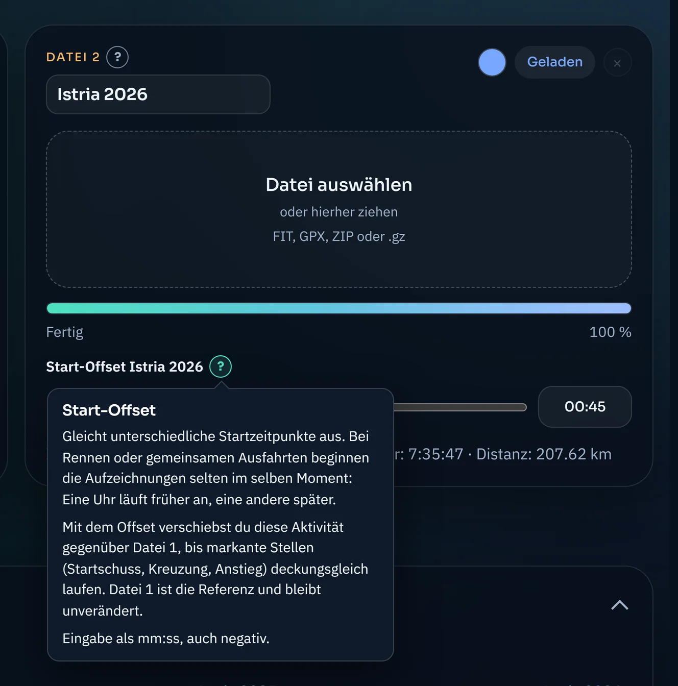
Die Vergleichstabellen
Das Panel „Gesamte Aktivität“ zeigt die Kennzahlen aller Dateien nebeneinander: Zeilen sind die Messwerte, Spalten die Dateien. Es gibt zwei Tabellen. Mit dem Pfeil oben rechts klappst du das ganze Panel ein, die untere Tabelle lässt sich zusätzlich einzeln einklappen.
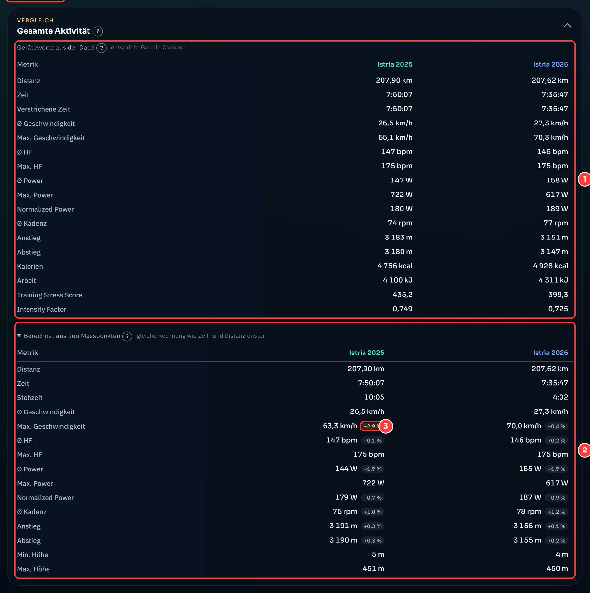
- Gerätewerte. Diese Zahlen hat dein Gerät am Ende der Aktivität selbst in die Datei geschrieben. Sie entsprechen genau dem, was Garmin Connect anzeigt. Die Tabelle gibt es nur für FIT-Dateien.
- Berechnet aus den Messpunkten. Dieselben Kennzahlen, aus den Sekundenwerten der Datei nachgerechnet. Genau diese Rechnung steckt auch in den Tabellen für Zeit- und Distanzfenster, die es für Abschnitte gibt.
- Abweichung. Das kleine Badge zeigt, wie weit der berechnete Wert vom Gerätewert abweicht. Orange bedeutet mehr als 2 %. Warum es Abweichungen gibt, steht im Abschnitt Messmethodik.
Wiedergabe
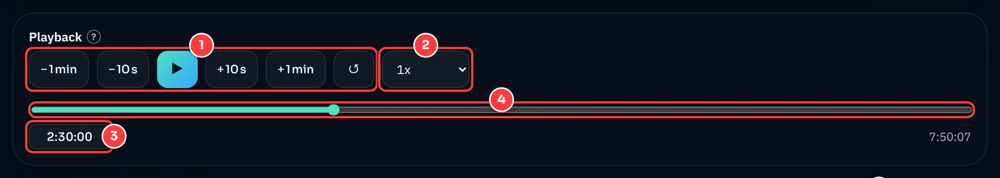
- Sprungtasten, Play und Zurücksetzen. − 1 min, − 10 s, + 10 s und + 1 min springen in der Zeit. Läuft die Wiedergabe gerade, läuft sie danach weiter. ↺ springt an den Anfang.
- Tempo von 0,5× bis 500×. Es bestimmt, wie schnell die Marker auf der Karte laufen.
- Zeitfeld. Tippe eine Zeit ein, zum Beispiel
12:34,1:30:00oder nur Sekunden, und bestätige mit Enter. - Zeitleiste. Ziehe den Regler, um an eine beliebige Stelle zu springen.
Karte und Distanzfenster
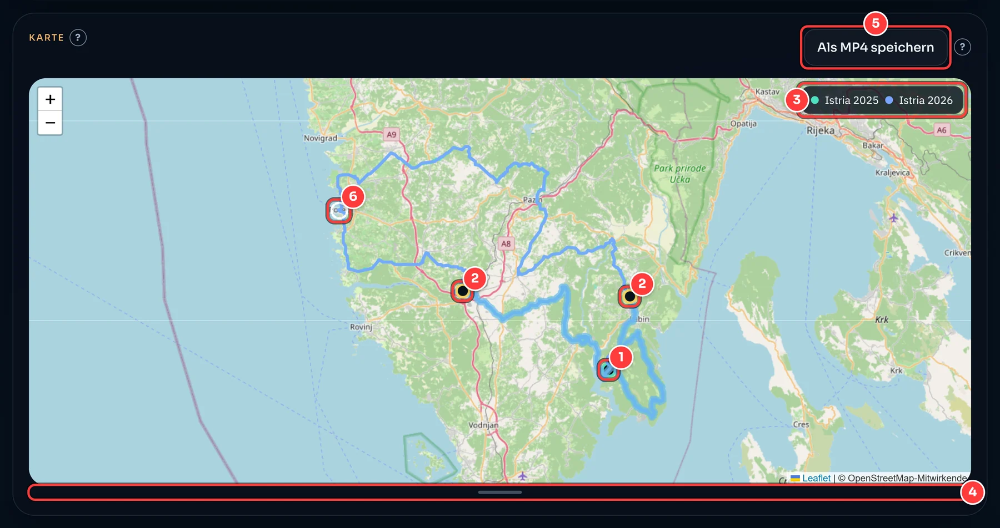
- Marker. Sie zeigen, wo jede Aktivität zur aktuellen Zeit ist.
- Distanzfenster. Klicke zweimal auf den Track (innerhalb von etwa 30 Pixeln um die Linie), und es entsteht ein Streckenabschnitt. Der nächste Klick startet ein neues Fenster.
- Legende. Sie liegt in der Karte und bleibt bei jeder Kartengröße oben rechts. Genau diese Legende erscheint auch im Video.
- Ziehgriff. Ziehe ihn nach unten oder oben, um die Höhe der Karte zu ändern (auch mit den Pfeiltasten).
- Als MP4 speichern, siehe unten.
Das Distanzfenster vergleicht denselben Streckenabschnitt für jede Datei, auch wenn die Aktivitäten ihn zu ganz unterschiedlichen Zeiten gefahren sind. Das ist der große Vorteil gegenüber dem reinen Zeitfenster.
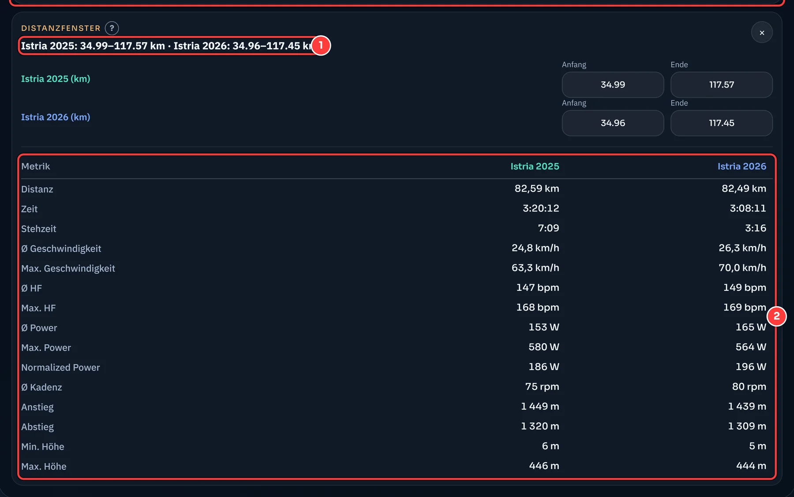
- Die gemessenen Kilometer je Datei zwischen deinen beiden Klicks.
- Die Kennzahlen genau dieses Abschnitts für jede Datei.
Graph und Zeitfenster
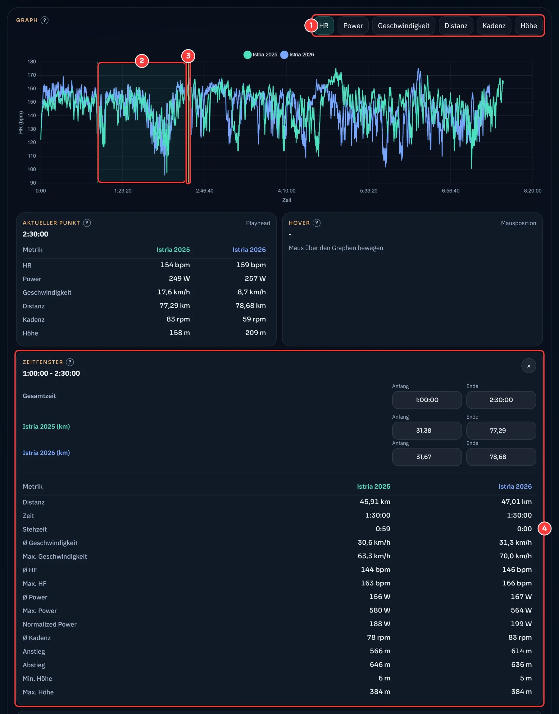
- Messwert. Wähle, ob HR, Power, Geschwindigkeit, Distanz, Kadenz oder Höhe über die Zeit gezeigt wird.
- Zeitfenster. Ziehe mit der Maus über den Graphen, um einen Abschnitt zu markieren.
- Playhead. Die gelbe Linie ist die aktuelle Position der Wiedergabe.
- Panel Zeitfenster. Es zeigt die Kennzahlen des Abschnitts für jede Datei. Anfang und Ende kannst du unten genau eintippen, als Zeit oder als Kilometer je Datei.
Direkt über dem Panel stehen „Aktueller Punkt“ (die Werte an der Stelle des Playheads) und „Hover“ (die Werte unter dem Mauszeiger im Graphen).
Als MP4-Video speichern
Der Knopf „Als MP4 speichern“ über der Karte rendert die Karte mit allen Aktivitäten und ihren wandernden Markern über die gesamte Aktivität als Video. Das passiert in deinem Browser, es wird nichts hochgeladen.
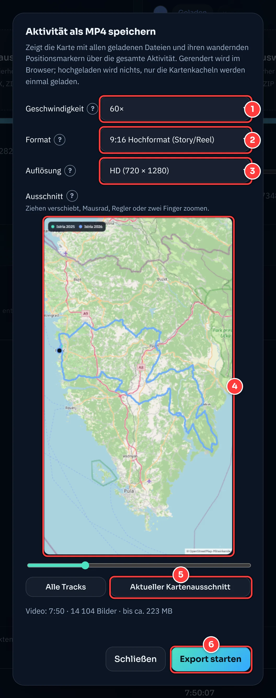
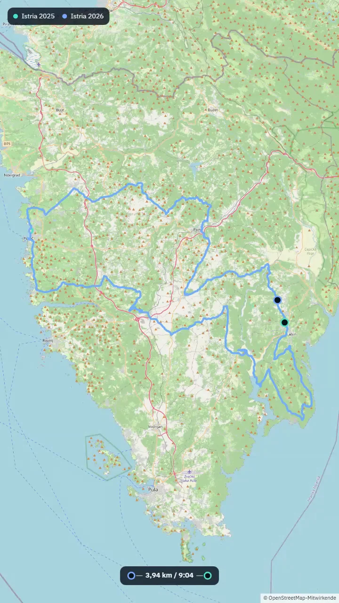
- Tempo. 60× heißt: Eine Minute Aktivität dauert im Video eine Sekunde. Vorbelegt ist die kleinste Stufe, bei der das Video höchstens zehn Minuten lang wird.
- Format. 16:9, 4:3 und 1:1 sowie die Hochformate 4:5 und 9:16 (Stories, Reels).
- Auflösung. Gerechnet über die kurze Seite: Vorschau (360), HD (720) oder Full HD (1080). Die Pixelzahl steht in Klammern.
- Ausschnitt. Die Vorschau zeigt, was im Video zu sehen ist. Ziehe zum Verschieben, zoome mit Mausrad, Regler oder zwei Fingern. „Alle Tracks“ passt alles ins Bild.
- Aktueller Kartenausschnitt übernimmt den Bereich, den du gerade in der großen Karte eingestellt hast.
- Export starten. Unter den Feldern siehst du Länge und höchstmögliche Größe der Datei. Mit „Abbrechen“ stoppst du jederzeit, dann wird nichts gespeichert.
Gut zu wissen: Die Namen der Dateien in der Legende sind genau die Anzeigenamen, die du oben vergeben hast. Für den Export brauchst du einen aktuellen Chrome-, Edge- oder Firefox-Browser mit Video-Unterstützung (WebCodecs) und eine Datei mit GPS-Daten. Die Kartenkacheln werden dafür einmal aus dem Internet geladen. Firefox erzeugt bei gleicher Einstellung größere Dateien als Chrome und Edge.
Am Handy
FITcomparer funktioniert auch auf dem Smartphone. Die Karten stehen untereinander, und die Dateiauswahl zeigt alle Dateien, damit auch .fit-Dateien und ZIPs aus dem Download-Ordner auswählbar sind. Breite Tabellen scrollst du seitlich. Die -Erklärungen öffnest du mit einem Tipp und schließt sie mit einem Tipp daneben.
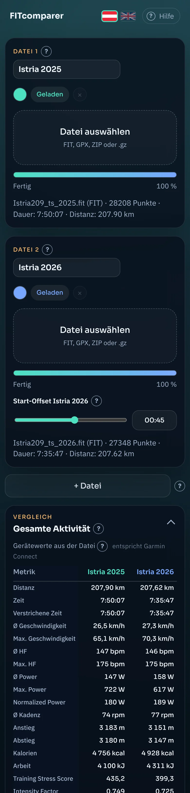
Gerät oder berechnet? Warum die Werte abweichen
Eine FIT-Datei enthält zwei verschiedene Dinge:
- die Sekundenwerte („Records“): Position, Höhe, Puls, Leistung und mehr, einmal pro Sekunde.
- eine Zusammenfassung („Session“): Summen und Durchschnitte, die dein Gerät am Ende der Aktivität selbst ausgerechnet hat. Garmin Connect zeigt diese Zahlen an.
FITcomparer zeigt beides getrennt. Die Gerätewerte sind die Zusammenfassung und stimmen mit Garmin Connect überein. Die berechneten Werte stammen aus den Sekundenwerten. Nur sie sind für beliebige Abschnitte möglich, denn für ein Zeit- oder Distanzfenster gibt es keine Zusammenfassung des Geräts. Deshalb stimmt die berechnete Tabelle bewusst nicht in jeder Zeile auf die Nachkommastelle.
Wie groß sind die Abweichungen?
Gemessen an vier Aktivitäten (zwei Tagestouren und zwei lange Ultra-Fahrten) gegenüber den Gerätewerten:
| Kennzahl | Abweichung | Warum |
|---|---|---|
| Distanz | ±0,0 % | Identisch: Beide stammen aus demselben Distanzzähler. |
| Ø Herzfrequenz | −0,2 bis +0,8 % | Mittelwert über die Sekundenwerte. |
| Ø Leistung | −0,6 bis −1,7 % | Das Gerät summiert die Leistung intern feiner, als es Sekundenwerte speichert. Aus den gespeicherten Sekunden lässt sich das nicht zurückgewinnen. |
| Normalized Power | −0,05 bis −0,9 % | Gleiche Ursache. Die Formel selbst ist die übliche (30-Sekunden-Mittel, vierte Potenz). |
| Ø Kadenz | +0,1 bis +1,2 % | Rollphasen mit 0 rpm zählen wie bei Garmin nicht in den Durchschnitt. |
| Anstieg und Abstieg | +0,1 bis +1,9 % | Die Höhe ist auf 0,2 m genau gespeichert und rauscht. Ohne Glättung wären die Summen rund 5 % zu hoch. Deshalb wird über ±5 Sekunden geglättet. |
| Max. Geschwindigkeit | −0,4 bis −2,9 % | Dieselbe Glättung nimmt kurzen Spitzen etwas Höhe. |
| Ø Geschwindigkeit | 0 bis −3,5 % | Wir teilen die Distanz durch die verstrichene Zeit, Garmin durch die Timerzeit. Bei Aktivitäten mit längeren Pausen gibt es deshalb einen Unterschied. |
Zeit und Verstrichene Zeit: Die Gerätetabelle trennt beides. „Zeit“ ist die Timerzeit (ohne Pausen), „Verstrichene Zeit“ ist die Zeit vom Start bis zum Ende. Bei einer Aktivität mit 31 Minuten Pause lagen sie in unserem Test bei 14:33:20 und 15:04:19.
Der Gerätewert ist die Referenz, wenn du die Zahl mit Garmin Connect vergleichen willst. Die berechneten Werte sind die richtige Wahl, wenn du Abschnitte mit Abschnitten vergleichst, denn dort rechnen alle Dateien auf dieselbe Weise.
Datenschutz und externe Dienste
Deine Aktivitätsdateien verlassen deinen Browser nicht. Das Lesen, Rechnen, Zeichnen und auch das Rendern des Videos passieren lokal. Die App selbst kennt keinen Upload und kein Benutzerkonto, setzt keine Cookies und enthält keine Analyse-Skripte.
Damit die Seite aussieht und funktioniert, lädt dein Browser aber Inhalte von anderen Servern. Diese Betreiber sehen deine IP-Adresse und die jeweilige Anfrage:
| Dienst | wofür | wann |
|---|---|---|
| OpenStreetMap (tile.openstreetmap.org) | Kartenkacheln | laufend beim Anzeigen der Karte, im Export-Dialog und beim Video-Export. Der Betreiber sieht damit, welchen Kartenausschnitt du betrachtest. |
| unpkg.com | Kartenbibliothek Leaflet | beim Laden der Seite |
| cdn.jsdelivr.net | Diagrammbibliothek Chart.js | beim Laden der Seite |
| esm.sh | FIT-Leser, ZIP-Entpacker, MP4-Baustein | beim Laden der Seite, der MP4-Baustein erst beim Export |
| Google Fonts | Schriftarten | beim Laden der Seite |
Häufige Fragen und Fehlerbehebung
- Die Datei wird nicht geladen.
- FITcomparer liest FIT, GPX und ZIP mit genau einer Aktivität. TCX wird nicht unterstützt. Bei einer Fehlermeldung unter der Dateikarte steht, woran es liegt.
- Es erscheint „Das ZIP enthält mehrere Aktivitäten“ oder „Komplett-Export“.
- Exportiere die Aktivität einzeln über das Zahnrad → „Datei exportieren“, oder entpacke das Archiv und wähle die gewünschte .fit-Datei.
- Die Werte weichen von Garmin Connect ab.
- Schau in die erste Tabelle, die „Gerätewerte“: Sie entsprechen Garmin Connect. Die zweite Tabelle ist nachgerechnet und weicht bewusst leicht ab, siehe Messmethodik.
- Es gibt keine Gerätewerte-Tabelle.
- Sie erscheint nur, wenn mindestens eine geladene Datei eine FIT-Datei mit Zusammenfassung ist. Bei GPX-Dateien fehlt sie.
- Der Knopf „Als MP4 speichern“ ist grau.
- Entweder ist noch keine Datei mit GPS-Daten geladen, oder dein Browser unterstützt keinen Video-Export. Verwende dann einen aktuellen Chrome-, Edge- oder Firefox-Browser.
- Der Export bricht ab oder ist riesig.
- Wähle eine höhere Geschwindigkeit oder eine kleinere Auflösung, dann wird das Video kürzer und leichter. Unter den Feldern im Dialog steht die zu erwartende Größe; ab etwa 1,5 GB lässt sich der Export nicht mehr starten.
- Das Video läuft im Browser, aber nicht im Windows-Player.
- Exportiere es mit der aktuellen Version von FITcomparer neu. Ältere Exporte aus Firefox enthielten eine fehlerhafte Videobeschreibung, die Browser tolerieren, der Windows-Player aber nicht.
- Die Karte bleibt grau.
- Die Kartenkacheln kommen aus dem Internet (OpenStreetMap). Ohne Verbindung oder bei blockierten Anfragen bleibt der Hintergrund leer, Strecke und Marker erscheinen trotzdem.
- Am Handy sehe ich meine Datei nicht in der Auswahl.
- Auf Touch-Geräten zeigt die Auswahl alle Dateien. Suche im Ordner „Downloads“ nach dem ZIP aus Garmin Connect. Wurde es in einer anderen App gespeichert, tippe im Auswahlfenster auf das Menü und wähle den richtigen Speicherort.
- Die Tabelle ist am Handy zu breit.
- Wische sie seitlich. Die Gerätetabelle mit zwei Dateien passt in der Regel ohne Scrollen, die berechnete Tabelle mit den Abweichungs-Badges ist breiter.
Credits und Lizenz
FITcomparer ist freie Software unter der MIT-Lizenz. Den Quellcode findest du auf GitHub.
FITcomparer baut auf diesen Werken auf:
| Baustein | Zweck | Lizenz |
|---|---|---|
| OpenStreetMap | Kartendaten, © OpenStreetMap-Mitwirkende | ODbL |
| Leaflet | interaktive Karte | BSD-2-Clause |
| Chart.js | Graph | MIT |
| fit-file-parser | FIT-Dateien lesen | MIT |
| fflate | ZIP entpacken | MIT |
| mp4-muxer | MP4-Datei schreiben | MIT |
Garmin und Garmin Connect sind Marken der Garmin Ltd. oder ihrer Tochtergesellschaften. FITcomparer steht in keiner Verbindung zu Garmin. Der Screenshot der Garmin-Connect-Oberfläche dient allein der Erläuterung des Exports.